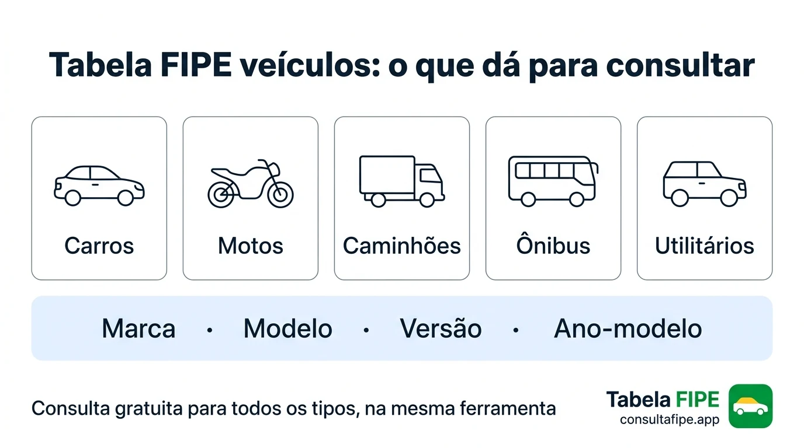
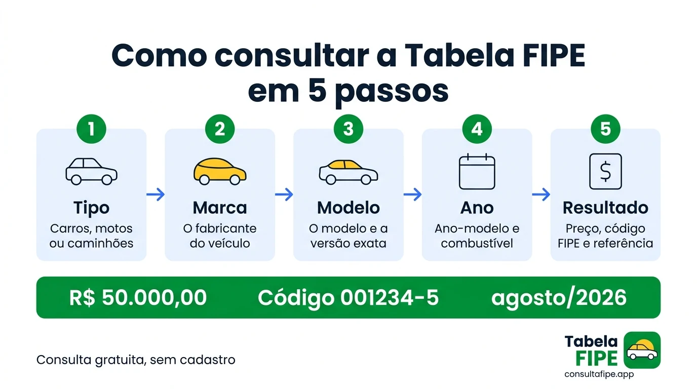
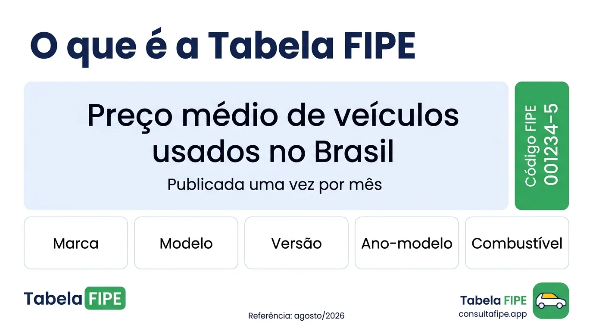

Comprar, vender ou avaliar um veiculo exige muito mais do que simplesmente comparar alguns anuncios na internet. Para saber se determinado carro, moto ou caminhao esta sendo negociado por um preco razoavel, e importante ter uma referencia confiavel de mercado. E justamente nesse contexto que a Tabela Fipe se tornou uma das principais referencias utilizadas no Brasil.
A Tabela Fipe apresenta precos medios de veiculos no mercado nacional e pode ajudar consumidores, vendedores, empresas, seguradoras e profissionais do setor automotivo a compreender melhor o valor de determinado modelo. A propria Fundacao Instituto de Pesquisas Economicas informa que os valores servem como parametro para negociacoes e avaliacoes, pois o preco efetivamente praticado pode variar conforme regiao, conservacao, acessorios, caracteristicas do veiculo e condicoes de oferta e procura.
Neste guia, voce vai entender de maneira simples o que e a Tabela Fipe, como consultar um veiculo, como interpretar o preco apresentado, quais informacoes sao necessarias, por que o valor pode ser diferente do preco anunciado e quais cuidados devem ser tomados antes de comprar ou vender um veiculo. Tambem veremos como utilizar uma consulta de preco como ponto de partida para uma analise mais completa.
O que e a Tabela Fipe?
A Tabela Fipe e uma referencia de precos medios de veiculos elaborada pela Fundacao Instituto de Pesquisas Economicas, conhecida como Fipe. Seu objetivo e apresentar valores medios de veiculos comercializados no mercado nacional. A ferramenta contempla diferentes categorias, incluindo automoveis, utilitarios, motos, caminhoes e micro-onibus.
O preco da Tabela Fipe nao significa necessariamente que aquele seja o preco exato pelo qual o veiculo sera comprado ou vendido. Ele e uma referencia media de mercado.
Por exemplo, imagine que um determinado carro apresente um valor de R$ 70.000 como preco medio de referencia. Um veiculo extremamente conservado, com baixa quilometragem, pneus novos e historico de manutencao organizado pode ser anunciado acima desse valor. Ja outro exemplar com problemas mecanicos, pintura danificada ou quilometragem elevada pode ser negociado por menos. Portanto, a Tabela Fipe deve ser interpretada como uma referencia, e nao como uma tabela obrigatoria de precos.
Para que serve a Tabela Fipe?
A consulta pode ser util em diversas situacoes relacionadas a compra, venda e avaliacao de veiculos. Entre os principais usos estao:
- Pesquisar o preco medio de um carro
- Comparar diferentes modelos
- Avaliar um veiculo usado
- Negociar a compra de um automovel
- Definir uma base inicial para venda
- Comparar anuncios de veiculos semelhantes
- Ter uma referencia para seguros
- Auxiliar determinadas avaliacoes financeiras
- Acompanhar mudancas no valor medio de um modelo
- Analisar o mercado de veiculos usados
A Fipe informa que os precos medios de veiculos sao utilizados como referencia por seguradoras e em contratos de compra e venda. A instituicao tambem informa que seus dados podem servir de base para determinados calculos relacionados ao IPVA em estados brasileiros. Isso explica por que a consulta se tornou tao conhecida entre proprietarios e compradores.
Como consultar a Tabela Fipe?
A consulta e relativamente simples, mas e importante selecionar corretamente as informacoes do veiculo. De forma geral, voce precisa identificar a categoria do veiculo, a marca, o modelo, o ano-modelo e o mes e ano de referencia da consulta.
A pagina oficial da Fipe permite pesquisas de carros e utilitarios, caminhoes e micro-onibus e motos. Tambem existe a possibilidade de pesquisa utilizando o Codigo Fipe quando essa informacao esta disponivel. Uma maneira pratica de realizar a pesquisa e seguir esta sequencia:
Escolha a categoria
Primeiro, identifique se voce esta procurando um carro ou utilitario, moto, caminhao ou micro-onibus. Escolher a categoria correta evita que voce consulte um veiculo diferente daquele que deseja avaliar.
Selecione a marca
Depois, procure a fabricante do veiculo: Volkswagen, Chevrolet, Fiat, Toyota, Honda, Hyundai, Ford, Renault, Nissan, Jeep, entre outras. A disponibilidade exata depende da base de consulta e do periodo pesquisado.
Selecione o modelo
Depois de escolher a marca, sera necessario selecionar o modelo correspondente. Essa etapa merece atencao porque um mesmo veiculo pode possuir diversas versoes com precos distintos.
Informe o ano-modelo
A Fipe esclarece que, na consulta de veiculos, o ano indicado corresponde ao ano do modelo, e nao necessariamente ao ano de fabricacao. Essa diferenca pode alterar significativamente o resultado da pesquisa.
Confira o mes de referencia
Os valores apresentados estao associados a um mes e ano de referencia. Ao utilizar uma informacao encontrada em anuncio ou conversa, verifique sempre o periodo correspondente.
O que aparece no resultado da consulta?
Dependendo da consulta realizada, voce podera encontrar: Mes de referencia, Codigo Fipe, Marca, Modelo, Ano-modelo, Data da consulta e Preco medio. Essas informacoes ajudam a evitar confusao entre modelos parecidos.
O preco da Tabela Fipe e o preco real do veiculo?
Nao necessariamente. Essa e uma das duvidas mais importantes sobre a Tabela Fipe. O valor apresentado representa um preco medio de referencia. O preco real de negociacao pode ser maior ou menor. A propria Fipe explica que os precos efetivamente praticados podem variar por fatores como: Regiao, Estado de conservacao, Cor, Acessorios, Oferta e procura e Caracteristicas especificas do veiculo.

Inspecao mecanica e essencial para complementar a consulta da Tabela Fipe
Imagine dois carros exatamente do mesmo modelo e ano. O primeiro possui baixa quilometragem, revisoes realizadas, pneus novos, interior conservado, pintura original e documentacao organizada. O segundo apresenta alta quilometragem, arranhoes, pneus desgastados, manutencao atrasada e pequenos problemas mecanicos. Embora ambos possam aparecer associados ao mesmo modelo e ano na Tabela Fipe, o preco de negociacao pode ser bastante diferente.
Por que o preco anunciado pode ser diferente da Tabela Fipe?
Estado de conservacao
Um carro bem conservado tende a despertar maior interesse do comprador. Da mesma forma, um veiculo que precisa de reparos pode ter seu preco reduzido.
Quilometragem
A quilometragem pode influenciar a percepcao de valor do mercado. Dois veiculos do mesmo ano e modelo podem apresentar precos diferentes devido a utilizacao acumulada.
Localizacao
O mercado automotivo nao funciona exatamente da mesma maneira em todas as regioes do Brasil. Oferta, demanda, impostos, disponibilidade e preferencias locais podem influenciar os precos.
Acessorios
Itens adicionais tambem podem influenciar uma negociacao: central multimidia, bancos especiais, rodas, equipamentos de seguranca, acessorios originais e itens instalados posteriormente. Entretanto, nao significa que todo acessorio aumentara o valor do veiculo na mesma proporcao do investimento realizado.
Historico do veiculo
Um automovel com historico de manutencao documentado pode transmitir mais confianca ao comprador. Por outro lado, veiculos com historico desconhecido podem enfrentar maior resistencia durante a negociacao.
Tabela Fipe para carros
Os carros estao entre os veiculos mais pesquisados. Antes de comprar um automovel usado, e possivel utilizar a referencia da Tabela Fipe para criar uma primeira estimativa de valor. Porem, uma analise completa deve considerar outros elementos.
- Consulte o modelo correto
- Confira o ano-modelo
- Verifique a versao
- Compare anuncios semelhantes
- Analise a quilometragem
- Observe o estado da pintura
- Confira pneus
- Verifique o interior
- Avalie o historico de manutencao
- Faca uma inspecao mecanica
- Confira a documentacao
- Pesquise eventuais restricoes antes de concluir a negociacao
A Tabela Fipe ajuda principalmente na parte de referencia de preco. Ela nao substitui uma inspecao fisica ou uma analise documental.
Tabela Fipe para motos
A consulta tambem pode ser utilizada para motocicletas. O processo segue uma logica semelhante: identificar a marca, selecionar o modelo, escolher o ano-modelo e conferir o valor correspondente ao periodo da consulta. No entanto, motocicletas podem sofrer grande influencia de fatores especificos:
- Quilometragem
- Estado dos pneus
- Condicao da relacao
- Historico de manutencao
- Acessorios e modificacoes
- Uso profissional
- Conservacao geral

Uma moto utilizada diariamente em atividades profissionais pode apresentar um desgaste diferente de outra usada ocasionalmente. Por isso, novamente, o valor medio deve ser tratado como uma referencia.
Tabela Fipe para caminhoes
Caminhoes tambem podem ser consultados dentro das categorias disponibilizadas pela Fipe. Nesse caso, a analise pode ser ainda mais complexa porque veiculos pesados possuem caracteristicas que influenciam diretamente a negociacao:
- Tipo de caminhao e modelo
- Ano-modelo e configuracao
- Quilometragem e estado mecanico
- Implemento
- Historico de utilizacao
- Conservacao e regiao
Para veiculos utilizados profissionalmente, a condicao mecanica pode ter impacto significativo na decisao de compra.
Codigo Fipe: o que e?
O Codigo Fipe e uma identificacao associada ao modelo consultado. Ele pode facilitar a pesquisa quando o usuario ja conhece o codigo correspondente ao veiculo. A consulta oficial da Fipe disponibiliza a opcao de pesquisa por codigo para carros e utilitarios, caminhoes e micro-onibus e motos.
Por que o codigo e util?
- Identificar uma configuracao especifica
- Reduzir duvidas entre modelos semelhantes
- Facilitar consultas futuras
- Conferir se voce esta pesquisando o veiculo correto
Ano de fabricacao e ano-modelo sao a mesma coisa?
Na consulta de veiculos da Fipe, o ano considerado e o ano-modelo, e nao o ano de fabricacao. Um veiculo pode ter sido fabricado em um ano, mas possuir ano-modelo do ano seguinte.
Por isso, nao e recomendavel escolher o ano apenas observando a data de fabricacao. Confira: ano de fabricacao, ano-modelo, modelo, versao e Codigo Fipe quando disponivel. Essa conferencia reduz o risco de comparar veiculos diferentes.
Tabela Fipe e compra de carro usado
Imagine que voce encontrou um veiculo anunciado por R$ 65.000. Antes de negociar, voce pode pesquisar o mesmo modelo e ano na Tabela Fipe. Suponha que o valor medio de referencia encontrado seja R$ 62.000. Isso nao significa automaticamente que o vendedor esta cobrando caro. O veiculo pode possuir estado de conservacao superior, baixa quilometragem, equipamentos adicionais, historico de manutencao, pneus novos e caracteristicas que aumentam sua atratividade.
Por outro lado, se o veiculo estiver sendo vendido por valor muito abaixo da referencia, isso tambem nao significa que seja uma excelente oportunidade. Por isso, o ideal e perguntar: Por que o veiculo esta abaixo da media?
Como usar a Tabela Fipe para negociar?
A melhor maneira e utilizar o valor como ponto de partida. Nao trate a referencia como uma regra absoluta.
- Consulte o veiculo correto
- Anote o valor de referencia
- Pesquise anuncios semelhantes
- Compare quilometragem e avalie conservacao
- Verifique equipamentos
- Faca uma inspecao
- Considere custos futuros
- Defina um limite de negociacao
- So entao faca uma proposta

Tabela Fipe e venda de veiculos
Para quem esta vendendo, a consulta tambem pode ser muito util. O proprietario pode verificar a referencia media antes de definir o preco do anuncio. Com essas informacoes, torna-se mais facil estabelecer uma faixa de preco coerente.
Preco muito alto: pode reduzir o numero de interessados. Preco muito baixo: pode fazer o proprietario perder dinheiro ou levantar duvidas sobre o veiculo.
Tabela Fipe e atualizada?
Os valores sao apresentados de acordo com um mes e ano de referencia. Isso significa que uma consulta feita em um periodo diferente pode apresentar um resultado diferente. Por isso, ao utilizar uma informacao encontrada em um anuncio antigo, postagem de rede social ou conversa, verifique sempre o periodo correspondente. Um valor informado ha meses pode nao representar a mesma referencia disponivel atualmente.
Onde consultar a Tabela Fipe?
A consulta publica oficial dos precos medios de veiculos esta disponivel pelos canais da Fundacao Instituto de Pesquisas Economicas. A propria Fipe alerta que sua consulta oficial deve ser realizada nos canais correspondentes ao dominio oficial da instituicao.
Para facilitar a pesquisa e a compreensao dos dados relacionados ao mercado automotivo, voce tambem pode utilizar uma ferramenta especializada como o Consulta FIPE. O objetivo de uma plataforma de consulta e facilitar o acesso as informacoes e permitir que o usuario encontre rapidamente os dados necessarios para sua pesquisa.
Tabela Fipe serve para descobrir o valor exato do meu carro?
Nao. Essa distincao e essencial. A Tabela Fipe apresenta um preco medio de referencia, enquanto o preco especifico do seu veiculo depende das caracteristicas daquele exemplar.
| Caracteristica | Veiculo A | Veiculo B |
|---|---|---|
| Modelo | Mesmo | Mesmo |
| Ano-modelo | Mesmo | Mesmo |
| Quilometragem | Baixa | Alta |
| Conservacao | Excelente | Regular |
| Pneus | Novos | Desgastados |
| Historico | Completo | Limitado |
| Preco final | ✅ Pode ser maior | ⬇️ Pode ser menor |
Quais fatores podem aumentar ou diminuir o valor de um veiculo?
Fatores que podem favorecer a valorizacao
- Excelente conservacao
- Baixa quilometragem
- Manutencao comprovada
- Pneus em bom estado
- Documentacao organizada
- Boa procura pelo modelo
- Equipamentos valorizados pelo mercado
- Historico de uso bem documentado
Fatores que podem reduzir o interesse
- Problemas mecanicos
- Pneus desgastados
- Necessidade de pintura
- Interior danificado
- Manutencao atrasada
- Historico desconhecido
- Alta quilometragem
- Modificacoes que reduzem a atratividade
- Problemas documentais
E possivel consultar a Tabela Fipe pelo celular?
Sim. A consulta pode ser realizada utilizando dispositivos moveis, desde que o usuario tenha acesso a internet e ao canal de consulta correspondente. Isso e particularmente util quando voce esta olhando um veiculo em uma loja, concessionaria ou diretamente com um vendedor. A Fipe tambem informa em seu site oficial que disponibiliza gratuitamente seu aplicativo oficial.
Tabela Fipe e seguro de veiculos
A referencia de precos medios tambem possui importancia no setor de seguros. A Fipe informa que seus precos sao utilizados como referencia por seguradoras. Entretanto, isso nao significa que toda apolice de seguro utilizara exatamente o mesmo valor em qualquer situacao. Cada contrato possui suas proprias condicoes. Por isso, o proprietario deve consultar a apolice e verificar como a seguradora define a indenizacao em caso de sinistro.
Tabela Fipe e IPVA
Outro assunto frequentemente relacionado a Tabela Fipe e o IPVA. A Fipe informa que presta servicos para estados da federacao, utilizando informacoes de precos medios como base para determinados calculos relacionados ao IPVA.
Nao e correto assumir que simplesmente multiplicar o valor consultado na Tabela Fipe por uma porcentagem produzira o valor final do IPVA. Para saber o imposto correto, verifique as regras oficiais do estado onde o veiculo esta registrado.
Erros comuns ao consultar a Tabela Fipe
Mesmo sendo uma consulta relativamente simples, alguns erros podem gerar resultados incorretos.
Escolher o ano errado
O ano-modelo deve ser conferido com atencao e nao confundido com o ano de fabricacao.
Selecionar uma versao diferente
Modelos semelhantes podem possuir configuracoes diferentes com precos distintos.
Ignorar o mes de referencia
O valor deve ser analisado considerando o periodo correspondente da consulta.
Considerar o valor como preco obrigatorio
A Tabela Fipe e uma referencia media, nao uma determinacao automatica do preco final.
Nao avaliar o estado do veiculo
Conservacao e manutencao podem alterar significativamente uma negociacao.
Nao pesquisar o mercado local
Anuncios da mesma regiao ajudam a compreender a realidade da oferta e demanda.
Como fazer uma avaliacao mais completa?
Uma avaliacao mais inteligente combina diferentes informacoes.
- Consulte a Tabela Fipe - Primeiro, encontre o preco medio correspondente.
- Pesquise anuncios - Observe veiculos semelhantes anunciados na sua regiao.
- Compare caracteristicas - Ano, versao, quilometragem, conservacao, equipamentos e historico.
- Faca uma inspecao - Se estiver comprando, leve o veiculo para avaliacao mecanica quando possivel.
- Verifique a documentacao - Nao baseie uma compra apenas no preco.
- Calcule os custos adicionais - Transferencia, manutencao, seguro, pneus, impostos, combustivel e eventuais reparos.
- Negocie - Somente depois de reunir essas informacoes, estabeleca sua proposta.
Tabela Fipe e suficiente para comprar um carro?
Ela e uma ferramenta de referencia, mas nao substitui uma analise completa. Uma compra segura deve considerar preco, estado mecanico, conservacao, documentacao, historico, quilometragem, procedencia e custos futuros.
Um carro barato pode sair caro se apresentar problemas ocultos. Da mesma forma, um veiculo ligeiramente mais caro pode representar uma compra melhor quando esta bem conservado e possui historico de manutencao confiavel.
Como combinar Tabela Fipe com pesquisa de CNPJ?
Quando a negociacao envolve uma empresa, tambem pode ser interessante verificar informacoes cadastrais do estabelecimento. Por exemplo, se voce estiver comprando um veiculo de uma loja, concessionaria ou empresa, pode desejar confirmar os dados cadastrais antes de fechar negocio.
Para quem procura especificamente esse tipo de informacao, uma consulta relacionada ao cadastro empresarial pode complementar a pesquisa. Voce pode acessar a pagina de referencia consulta qual o CNPJ de uma empresa para buscar informacoes relacionadas a identificacao cadastral de empresas.
A Tabela Fipe ajuda a entender o valor medio de referencia do veiculo, enquanto uma consulta cadastral pode ajudar a identificar a empresa envolvida na negociacao. Essa combinacao e especialmente util quando o comprador esta negociando com uma empresa desconhecida.
Tabela Fipe x preco de anuncio
E importante separar tres conceitos:
Referencia media
Valor do vendedor
Valor final acordado
Como saber se um carro esta caro ou barato?
Uma maneira pratica e comparar o valor de referencia com os precos de veiculos semelhantes, considerando quilometragem, estado de conservacao, versao, equipamentos, regiao e historico de manutencao. Se um carro estiver muito acima da referencia, procure entender o motivo. Por outro lado, se estiver muito abaixo, investigue antes de considerar a oferta como oportunidade. Preco baixo nunca deve ser o unico motivo para comprar um veiculo.
Quando o preco for inferior, pergunte: O veiculo possui algum problema? A documentacao esta regular? Existe historico de acidente? A manutencao esta em dia? A quilometragem e compativel? O vendedor e confiavel?
A Tabela Fipe muda para todos os veiculos?
Nao necessariamente da mesma maneira. Os precos medios variam conforme modelo, ano e condicoes do mercado. Alguns veiculos podem apresentar alteracoes maiores em determinados periodos, enquanto outros podem permanecer relativamente estaveis. Por isso, quem esta acompanhando o mercado deve consultar a referencia correspondente ao periodo desejado.
Vale a pena consultar antes de vender ou comprar?
Sim, para ambos os casos. Para o vendedor, a consulta ajuda a evitar decisoes baseadas apenas em percepcao pessoal. Muitos proprietarios estabelecem o preco de um carro pensando no quanto pagaram originalmente. Entretanto, o mercado atual pode estar diferente. O valor de compra passado nao determina necessariamente o valor atual.
Para o comprador, conhecer uma referencia de preco ajuda principalmente durante a negociacao. Imagine que o vendedor esteja pedindo R$ 75.000. Se voce descobrir que a referencia media esta em R$ 65.000, tera um motivo para investigar a diferenca. Essa pergunta pode melhorar muito a qualidade da negociacao: O que justifica a diferenca de preco?
Dicas praticas para usar melhor a Tabela Fipe
- Consulte sempre o modelo correto
- Confira o ano-modelo
- Observe o mes de referencia
- Anote o Codigo Fipe quando disponivel
- Compare precos de anuncios
- Avalie a conservacao
- Confira a quilometragem
- Faca inspecao mecanica
- Verifique a documentacao
- Pesquise o historico do veiculo
- Nao confunda preco medio com preco obrigatorio
- Considere as condicoes do mercado local
- Nao tome uma decisao apenas com base em um unico numero